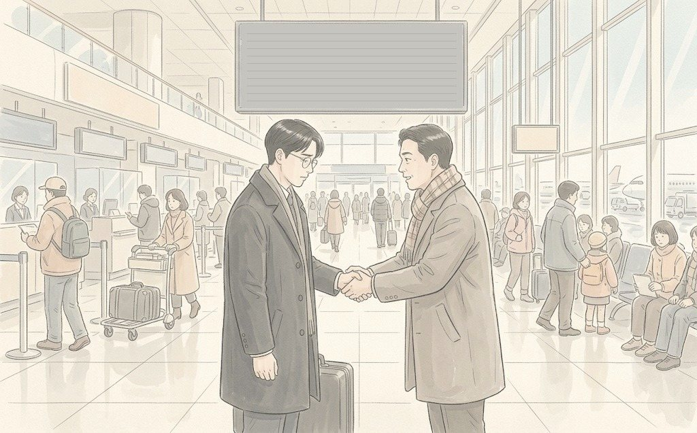
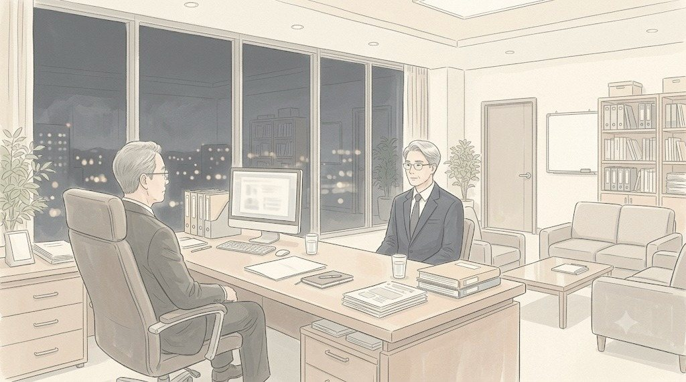
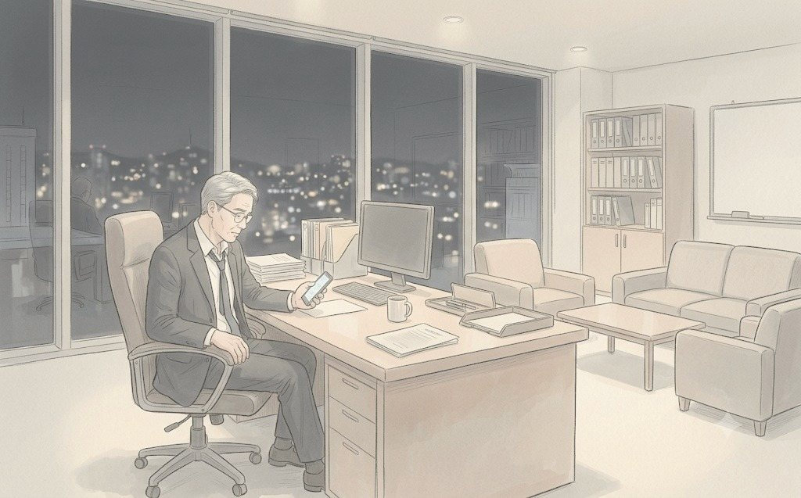

1994년 3월, 여의도. 국내 대기업 계열 식품 회사 기획실.
스물여섯 살 황인석은 신입 사원 연수원에서 1등으로 수료했다. 부산의 작은 고등학교, 서울의 사립대 경제학과. 집안에 회사원은 그가 처음이었다. 아버지는 자갈치 시장에서 건어물 가게를 했다.
기획실 첫 출근 날, 과장이 그에게 물었다.
"황인석 씨, 고등학교 어디 나왔어요?"
그는 학교 이름을 말했다. 과장은 고개를 갸웃했다.
"부산이에요? 우리 실에 그 학교는 처음이네."
기획실 열두 명 중 아홉 명이 서울의 명문 사립고인 인왕고등학교 출신이었다. 나머지 둘은 같은 대학 선후배였다. 그는 열두 번째였다.
처음 3년은 잘 몰랐다. 일은 그가 제일 잘했다. 보고서는 그의 것이 가장 정확했다. 그런데 승진은 늘 한 박자 늦었다. 해외 연수 대상자는 늘 다른 사람이었다. 회식 2차는 그가 집에 간 뒤에 시작되었다.
1999년 겨울. 외환위기 뒤 첫 구조조정.
기획실에서 두 명이 회사를 떠나야 했다. 그중 하나가 황인석이었다. 실장은 그를 불러 말했다.
"황 대리, 자네가 제일 유능한 거 알아. 그러니까 밖에 나가도 잘할 거야. 남은 사람들은 여기 아니면 갈 데가 없어."
황인석은 그 말을 평생 잊지 않았다. 유능해서 나가야 한다는 말. 그리고 '남은 사람들'이 누구인지도 잊지 않았다. 같은 고등학교 아홉 명은 한 명도 나가지 않았다.
그는 퇴직금으로 미국에 갔다. 서른한 살에 경영대학원에 입학했다. 영어는 서툴렀다. 첫 학기 토론 수업에서 그는 한 번도 말하지 못했다. 동기들은 그를 'the quiet Korean'이라고 불렀다.

두 번째 학기, 그는 방법을 찾았다. 말하기 전에 한 장짜리 메모를 만들었다. 숫자 세 개, 결론 한 줄. 그리고 약어를 외웠다. 미국 경영대학원에서 약어는 계급이었다. 약어를 쓰는 사람은 안에 있는 사람이었다.
졸업 후 글로벌 컨설팅사 서울 사무소에 들어갔다. 서른세 살. 이번에는 아무도 그의 고등학교를 묻지 않았다. 물어보는 건 하나였다. 이 사람이 고객에게 숫자를 팔 수 있는가.
그는 팔 수 있었다. 18년 동안. 파트너가 되었다. 국내 대기업 스무 곳의 조직을 진단했다. 그리고 그 회사들에서 같은 장면을 수십 번 보았다. 같은 학교, 같은 지역, 같은 입사 기수끼리 서로를 끌어 주는 장면. 그 사이에서 유능한 외부 사람이 조용히 밀려나는 장면.
2019년 봄. 청연그룹 지주사 사장실.
문혜경 사장이 그를 직접 만났다. 청연화장품 대표 자리를 제안하는 자리였다.
"황 파트너님. 왜 컨설팅을 그만두고 회사로 오시려고요?"
"남이 쓴 진단서를 실행하는 사람이 되고 싶어서요."
"솔직한 이유는요?"
황인석은 잠깐 웃었다.
"제가 25년 전에 쫓겨난 회사 같은 곳을, 한 번은 안에서 바꿔 보고 싶어서요."
문혜경은 그를 오래 봤다. 그리고 고개를 끄덕였다.
"청연도 그런 회사예요. 바꾸세요. 다만 하나만 기억하세요. 사람을 바꾸는 것과 사람을 갈아 치우는 건 달라요."
황인석은 그 말을 메모하지 않았다. 다 아는 말이라고 생각했다.
2021년 4월, 목요일 저녁 8시. 청연화장품 대표실.
황인석은 쉰세 살이었다. 창밖으로 광화문 광장의 불빛이 번졌다. 책상 위에는 제이슨 리가 두고 간 '이해관계자 지도'가 놓여 있었다. 내부와 외부. 원 두 개.
노크 소리가 났다. 권재혁이었다.
"대표님, 부르셨어요."
"앉아요, 권 상무."
권재혁이 앉았다. 황인석은 지도를 그의 앞으로 밀었다.
"이거 봤어요?"
"오늘 아침 회의실에 누가 두고 갔다고 들었습니다."
"제이슨이 실수했어요. 내부 자료가 돌아다니면 안 되는데."
황인석은 지도를 다시 집어 서랍에 넣었다.
"권 상무. 하나 물어볼게요. 제이슨한테 우리 쪽, 저쪽은 없다고 했다면서요."
"네."
"왜요?"
권재혁은 대답 대신 되물었다.
"대표님은 정말 쪽이 있다고 생각하세요?"
황인석은 웃었다. 그리고 의자를 돌려 창밖을 봤다.

"권 상무, 나는 스물여섯에 그 쪽 바깥에 있었어요. 일은 제일 잘했는데, 제일 먼저 나갔어요. 그 회사에서 나를 내보낸 사람들은 지금도 거기 있어요. 그중 둘은 사장이 됐고요."
창밖의 불빛이 그의 안경에 비쳤다.
"외부에서 온 사람은 성과를 두 배로 내야 같은 평가를 받아요. 그리고 한 번 실패하면 끝이에요. 내부 사람은 세 번 실패해도 다음 기회가 있고요. 권 상무도 알잖아요. 지난 3주 동안 토요일마다 그 의자에 앉아 있었으니까."
권재혁은 아무 말도 하지 않았다.
"그래서 나는 외부 사람을 챙겨요. 아무도 안 챙겨 주니까. 그게 쪽이라면, 쪽이 있는 거죠."
"대표님."
"말해요."
"저희 팀 사람들은 다 내부 출신입니다. 그 사람들은 제가 외부에서 왔다고 저를 밀어내지 않았어요. 새벽 5시 반에 불을 켜 준 사람들이에요."
황인석은 의자를 다시 돌렸다. 권재혁을 정면으로 봤다.
"알아요. 그래서 권 상무를 아끼는 거예요. 내부 사람을 다룰 줄 아는 외부 사람. 그게 제일 귀해요."
그는 잠깐 말을 멈췄다.
"다만 권 상무. 그 사람들이 권 상무를 끝까지 지켜 줄 거라고 믿지는 마요. 회사는 결국 자기 쪽을 지켜요. 내가 25년 전에 배운 거예요."
권재혁은 일어섰다. 문 앞에서 그가 돌아봤다.
"대표님. 25년 전 그 회사에서, 대표님을 지켜 준 사람은 정말 하나도 없었어요?"
황인석은 대답하지 않았다. 권재혁은 고개를 숙이고 나갔다.
대표실에 혼자 남은 황인석은 한참 창밖을 봤다. 그리고 휴대폰을 꺼내 오래된 연락처 하나를 찾았다.
'고재웅 선배 - 기획실.'
1999년, 그가 회사를 떠나던 날 유일하게 공항까지 배웅을 나왔던 사람. 인왕고 출신 아홉 명 중 한 명. 그 뒤로 22년 동안 연락하지 않았다. 연락하면, 자기가 세운 '쪽'이라는 말이 무너질 것 같아서.
황인석은 통화 버튼 위에서 손가락을 멈췄다. 누르지 않았다.

대신 비서실에 메시지를 보냈다.
그 메시지에 '어떻게' 다시 그리라는 건지는 적혀 있지 않았다.
(EP20 끝)